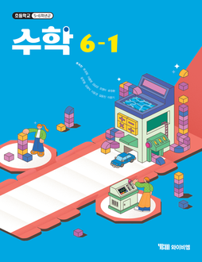

기본 수업요소
- 발문
- 수업활동
- 참여자
- 수업목차
- 진도평가
- 화상수업방
이번 차시 추천 수업안을 확인해보세요.
수업 한눈에 보기
40분 수업
학습 목표
쌓기나무로 만든 입체도형의 위, 앞, 옆에서 본 모양을 그리는 방법을 알고 표현할 수 있다.
핵심 내용
- [활동1] 쌓기 나무로 만든 입체도형의 위, 앞, 옆에서 본 모양 그리기
- [활동2] 쌓기나무로 만든 입체도형의 여러 방향에서 본 모양 알아보기
수업 흐름(40분)
도입
10분
›
10분
전개
25분
›
25분
활동
20분
›
20분
정리
5분
5분
지도상의 유의점
쌓은 모양이 주어진 그림과 같게 보일 수 있도록 위, 앞, 옆 방향에 맞게 쌓을 수 있게 한다.
수업용 PPTPPTX
쌓기 도형의
모양과 개수
모양과 개수
초등 5학년 수학
학생 활동지HWPX
평면, 입면, 위에서 본 모양
문제를 보고 빈칸을 채워보세요.
앞면
위면
옆면
형성평가HTML
1. 쌓기나무는 모두 몇 개일까요?
① 6개
② 9개
③ 10개
④ 11개
2. 앞에서 본 모양은 어느 것일까요?
수업 진행하기
40분 수업으로
진행 하시겠습니까?
※ 선택한 수업시간에 맞춰 수업안의 차트 조정됩니다.
안정된 수업진행을 지원해드립니다.
꼭 짚을 포인트
✓
✓
검색 결과 확인하기
수업용 PPTPPTX
쌓기 도형의
모양과 개수
모양과 개수
초등 5학년 수학
학생 활동지HWPX
평면, 입면, 위에서 본 모양
문제를 보고 빈칸을 채워보세요.
앞면
위면
실모양
형성평가HTML
1. 쌓기나무는 모두 몇 개일까요?
① 6개
② 9개
③ 10개
④ 11개
2. 앞에서 본 모양은 어느 것일까요?
바로 만들기
계획 세우는 시간을 줄여 AI가 빠르게 만드는 수업 자료입니다. 지금 사용해보세요!
활동지 만들기
문제 만들기
발문 추천
단원 정리 활동
활동지 변형하기
문제 변형하기
발문 추천
단원 정리 활동